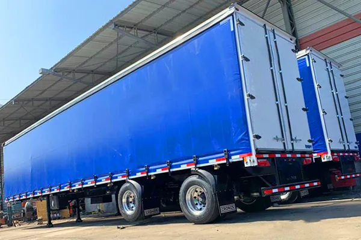
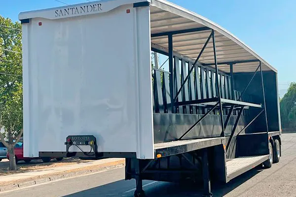
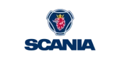
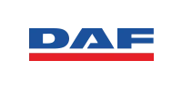
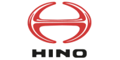
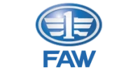
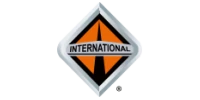

Carga general
Carga general
Speed Sider
Sider de carga lateral rápida
- Largo
- 12.400 a 15.800 mm
- Alto
- 2.700 a 3.000 mm
- Cortinas PVC 900 g/m² sellado por alta frecuencia
- Pilares intermedios desmontables
Ingeniería en Movimiento · Desde 2009
Diseñamos y fabricamos equipos Sider, Plano, Forestal, Minero, Carga Seca y Botellero con acero Strenx® 700, ejes europeos y certificación ISO 9001.



Trabajamos con las principales marcas de camiones





Nuestros equipos
Cada equipo se fabrica con acero sueco Strenx® 700, ejes europeos y componentes de marcas líderes. Elige por tipo de carga:
Carga general
Sider de carga lateral rápida
 Carga en pallets
Carga en pallets
 Carga de madera en trozos
Carga de madera en trozos
 Carga en general y faenas mineras
Carga en general y faenas mineras
 Carga general protegida
Carga general protegida
Furgón cerrado de aluminio
 Carga en general
Carga en general
Reconocimiento internacional
En 2014 Santander Equipos obtuvo el segundo lugar del Swedish Steel Prize, el premio con que SSAB distingue a las empresas que mejor aprovechan los aceros de alta resistencia en el mundo.
“El ganador del Swedish Steel Prize ha aprovechado, de manera inteligente e innovadora, el potencial de los aceros modernos de alta resistencia para crear algo nuevo y mejor, en beneficio de la industria y la sociedad.”— Jurado Swedish Steel Prize, SSAB
Además, SSAB nos certifica con el sello My Inner Strenx: la garantía de que cada equipo usa acero Strenx genuino.
Ver premios y certificacionesPor qué Santander
Nuestra visión del transporte: equipos con valor agregado en peso, seguridad y durabilidad.
El acero de alta resistencia permite estructuras más livianas sin perder rigidez. Menos tara significa más kilos pagados en cada viaje.
Superestructura en Strenx® 700 de SSAB. Contamos con el sello «My Inner Strenx», la garantía de rendimiento, ahorro y vida útil.
Válvulas Bendix y opción de frenos EBS con control de estabilidad antivuelco y frenado variable según carga.
Diseñamos según la legislación vigente: dimensiones y pesos máximos, luces, frenos, parachoques y cintas reflectantes.
Limpieza química con fosfatizante, dos capas de anticorrosivo epóxico y dos de poliuretano en proceso electrostático.
Departamento de ingeniería y personal técnico propio. Integramos acero, aluminio y plástico para equipos funcionales y durables.
Ingeniería al detalle
Toca cada punto para conocer los componentes que hacen la diferencia.
Perno rey marca JOST de 2" con sistema apernado: acople seguro y reemplazable.
Gatas JOST o similar con capacidad estática de levante de 25 toneladas y doble velocidad.
Tela PVC sellada por alta frecuencia, catracas tensoras sin fin y tubos laterales de aluminio.
Superestructura en acero de alta resistencia de procedencia sueca (SSAB): más rigidez con menos peso.
Depósitos de aire de 120 litros y líneas blindadas de alta presión de 8 y 10 mm.
Ejes de disco europeo y suspensión mecánica o neumática Suspensys de 13.000 kg por puente.
Válvulas Bendix y opción EBS con control de estabilidad antivuelco y frenado según carga.
Focos laterales, traseros y de patente LED multivoltaje, arnés sellado de 7 vías con sistema CLIP.
Simulador
Un equipo más liviano te permite transportar más carga útil dentro del peso máximo legal. Ajusta los valores y mira el impacto en tu operación.
Valores referenciales de ejemplo. Pide a nuestro equipo la tara exacta de tu configuración.
Cómo trabajamos
Analizamos tu carga, rutas y camión para definir la configuración óptima.
Nuestro equipo de ingeniería diseña el equipo según normativa y tus requerimientos.
Fabricamos en acero Strenx® 700 bajo un sistema de calidad ISO 9001.
Te entregamos el equipo listo para trabajar y te acompañamos con reparación y mantención.
Conoce nuestra planta, nuestros procesos y el resultado final: equipos funcionales, estéticos y durables, fabricados con acero, aluminio y plástico de primera línea.
Conoce la empresaPreguntas frecuentes
¿No encuentras lo que buscas? Escríbenos y un especialista te responde.
Preguntar por WhatsAppFabricamos la superestructura con acero de alta resistencia Strenx® 700 de procedencia sueca (SSAB). SSAB nos certificó con el sello «My Inner Strenx», que acredita el uso de acero Strenx genuino según sus estándares técnicos y de calidad.
Sí. Todos nuestros desarrollos se diseñan según la legislación de transporte vigente: pesos y dimensiones máximas, luces y frenos, parachoques y cintas reflectantes. Puedes revisar la normativa en nuestra sección de Calidad.
Sí. Según el modelo puedes elegir largo (de 10.500 a 15.800 mm), suspensión mecánica o neumática, llantas de acero o aluminio, frenos convencionales o EBS, piso de 3 o 5 mm y accesorios. Nuestro departamento de ingeniería te asesora.
Es un sistema de frenado electrónico según normativa internacional CE: ajusta la fuerza de frenado según la carga, incorpora control de estabilidad antivuelco, control inteligente de eje elevable y control de flota.
Sí. Somos especialistas en la fabricación y reparación de todo tipo de equipamiento para el transporte terrestre, y estamos homologados con la mayoría de las marcas de camiones.
Completa el formulario de cotización o escríbenos por WhatsApp al +56 9 9558 6223. Cuéntanos qué transportas, la ruta y tu camión, y te proponemos la configuración ideal.
¿Listo para renovar tu flota?